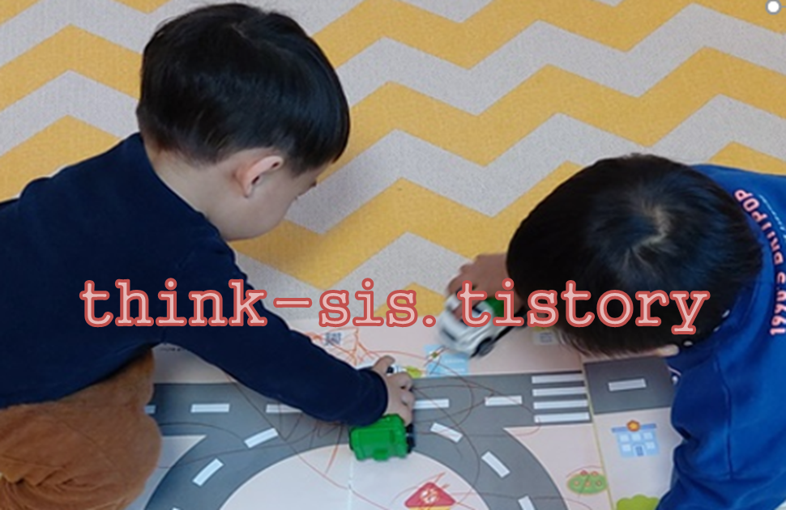
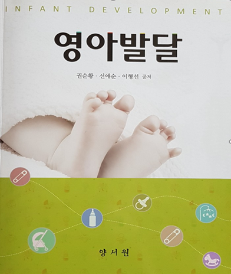

인지발달이론(cognitive development theory)은 인간이 유전적 요인에 의해 결정되는 존재가 아니라 주변환경과 문화적 자극을 능동적으로 구성할 수 있는 잠재력을 지닌 존재로 발달한다는 이론이다. 이러한 인지구조는 영아기부터 발휘하게 되는 지속적인 사고 과정과 추론기술을 다양하게 발달시키면서 성장한다.

피아제의 생애 및 사상
피아제(Jean Piaget, 1896~1980)는 스위스 뉴사텔에서 태어났으며, 21세에 동물학 박사학위를 받은 후 지식의 근원에 관한 문제를 세 자녀의 성장과정을 통해 과학적 연구를 하였다. 그는 1920년부터 제네바연구소에서 연구를 시작하여 1960년대 인지발달이론 분야에 지대한 기여를 하였다(Ginsburg & Opper, 1979; Phillips, 1995). 1980년 80세에 사망한 피아제(Piaget)의 대표 저서로 『아동의 언어와 사고(The language and thought of the child, 1923)』가 있다. 피아제(Piaget)는 영아의 운동적, 감각적 활동을 바탕으로 그들의 사고는 성인의 사고와는 매우 다르다는 것을 발견하였다. 영아기는 비록 단순하지만 환경과의 상호작용을 통하여 자신의 지식과 인지를 능동적으로 구성하는 존재라고 주장하였다.
피아제 인지발달의 개념
인지발달이론은 영아가 생각하는 과정에서 지식을 활용하여 문제를 해결하는 정신적 활동을 의미한다. 이 시기는 주변세계를 이해하고 적응하면서 일어나는 인지의 변화를 의미하는 개념은 다음과 같다.
1) 도식
도식(schema)은 영아가 사물이나 사건에 대해 이해하는 심리적 구조의 틀이다. 인간의 발달 수준에 따라 자신의 활동 경험으로 얻게 된 조직화된 행동양식이다. 최초 도식은 영아기의 빨기나 물체 잡기와 같은 선천적으로 가지고 태어난 반사적 행동으로부터 시작된다. 영아는 반사적 경험으로 도식 형성과 반복하는 과정을 통해 변화 · 발전된 복잡한 도식을 습득한다.
2) 적응
적응(adaptation)은 영아가 환경과의 직접적인 상호작용을 통한 도식의 변화과정이다. 영아 자신이 주위 환경과 조화를 이루기 위해 동화와 조절을 통하여 자연스럽게 개념을 확장해 간다. 적응은 동화와 조절이라는 두 가지 수단을 통해 진행된다
.
• 동화(assimilation)
동화란 새로운 환경 자극에 반응하기 위해 자신의 사고를 기존의도식을 사용하여 새로운 자극을 이해하는 과정이다. 영아는 환경의 요구에 관계없이 입으로 가져가 자신의 도식을 사용하여 의미를 이해한다.
• 조절(accommodation)
조절이란 기존의 도식으로 새로운 사물을 이해할 수 없을 때, 도식을 새롭게 바꾸는 과정이다. 영아는 자신의 도식에 맞게 동화시킬 수 없음을 깨닫고 인지구조를 다시 변경하여 새로운 도식을 형성한다.
3) 평형화
평형화(equilibrium)는 유기체가 자신과 환경 간의 균형상태를 이루기 위해 동화와 조절을 하여 보다 정교하고 복잡한 지식을 획득하는 과정이다. 평형화는 정지된 상태가 아니라 자신의 생각을 수정하거나 변형시켜 환경으로부터 새로운 개념을 받아들여 평형을 유지하는 것이다.
4) 조직화
조직화(organization)는 인지과정이 도식과 관련된 과정이 상호 관계된 행동이나 사고체계를 자신의 사고에 알맞은 체계로 형성한다. 어떤 도식을 행동이나 사고를 함께 연결한 후 유사성과 차이점을 찾아내어 조직화시켜 주변 세계에 알맞도록 적응하게 된다.
출처: 권순황, 선애순, 이형선 공저(2015), 영아발달. 양서원
